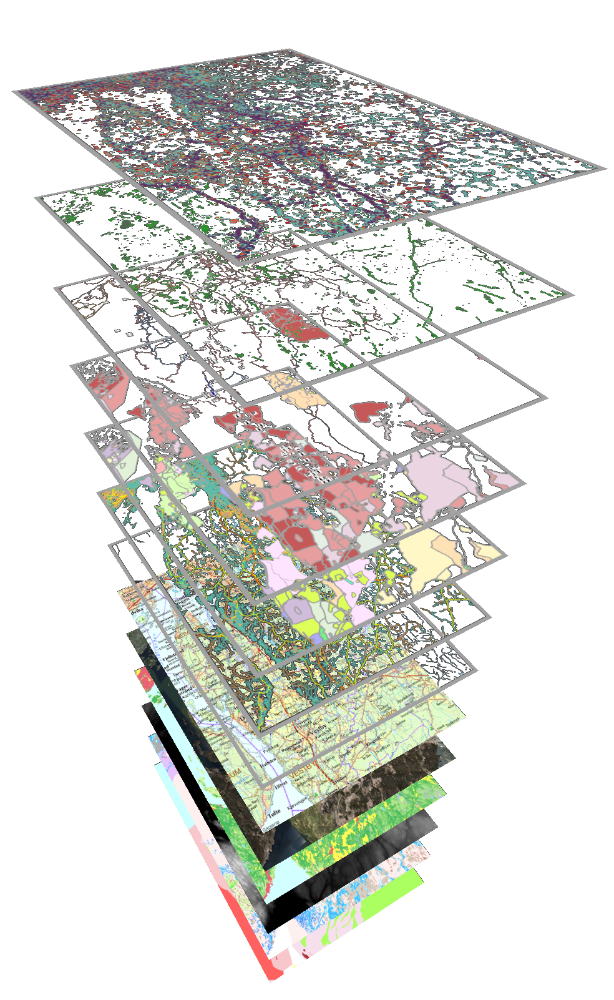
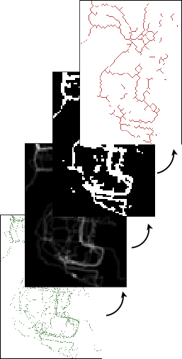
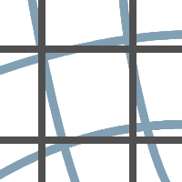
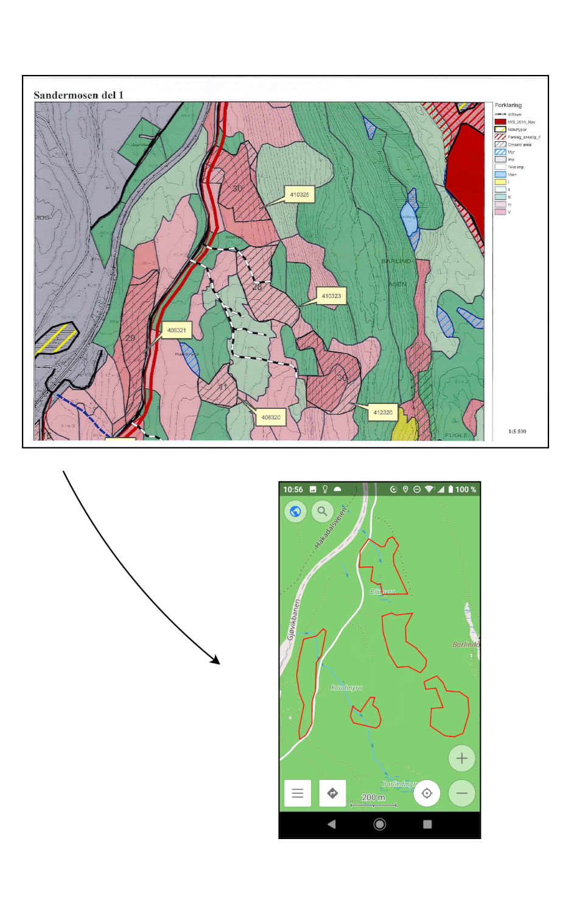
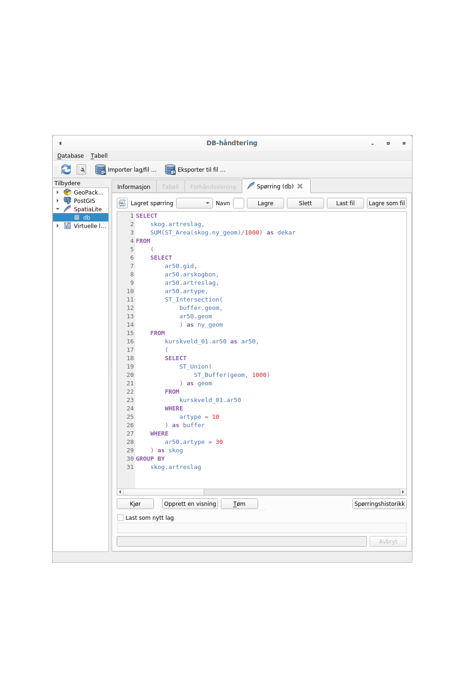
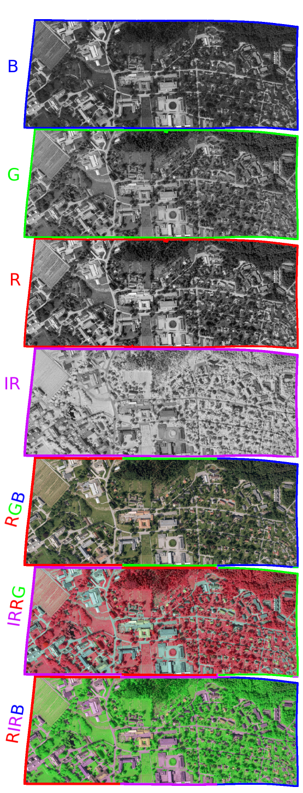

- kurs
Praktisk startkurs i QGIS
Last ned kartdata
Fargelegge i QGIS
Bruk WMS-tjenester
Komponere kart

GPS-sporing - punkter og linjer i QGIS
Bruk av GPS-data
Analyse av spordata
Nettverksanalyse


Georeferering og digitalisering i QGIS
Koordinatlste til QGIS
Importer scannet kart
Skjermdigitalisering
Overfør til smarttelefon

Databaser i QGIS
Opprett en database
Skriv til en database
Enkle SQL-spørringer
Store datasett
Opplegg ikke ferdigutviklet

Fjernmåling i QGIS
Last ned fjernmålte data
LIDAR-punktskyer
Multispektrale bilder
Semi-Automatic Classification Plugin
Klassifisering
Opplegg planlegges

Anders Johan konnestad
anders.konnestad@nmbu.no
+47 977 22 320
Org.nr.: 922 612 072
Gamleveien 18, 1434 ÅS